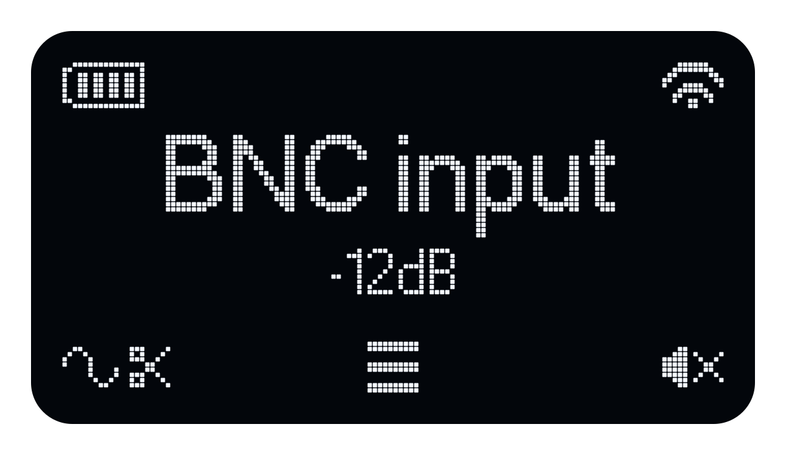
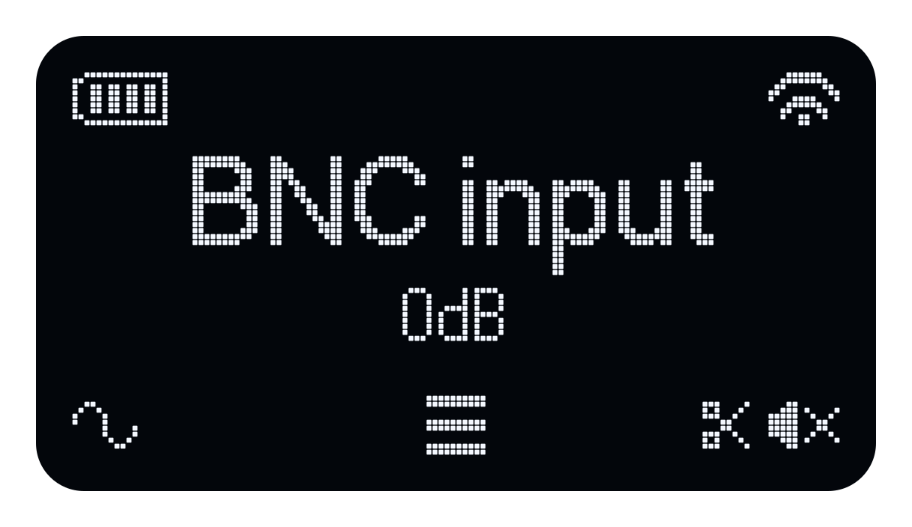
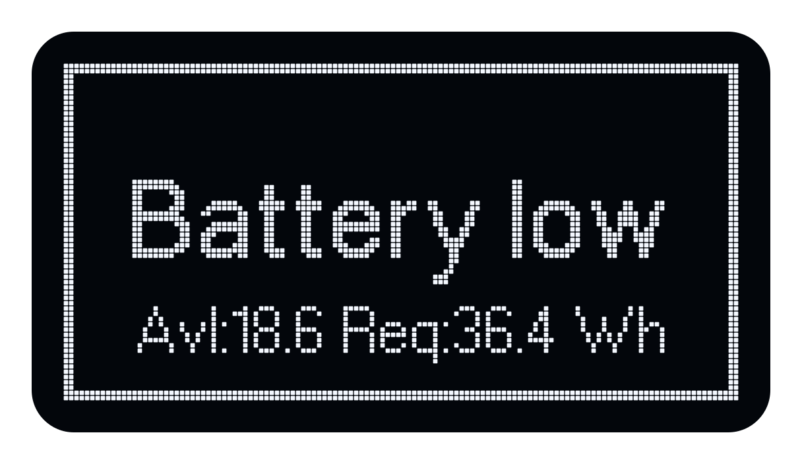
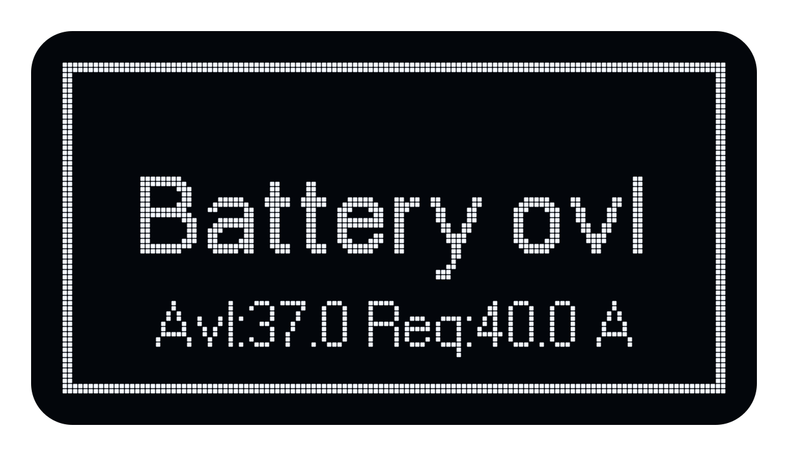
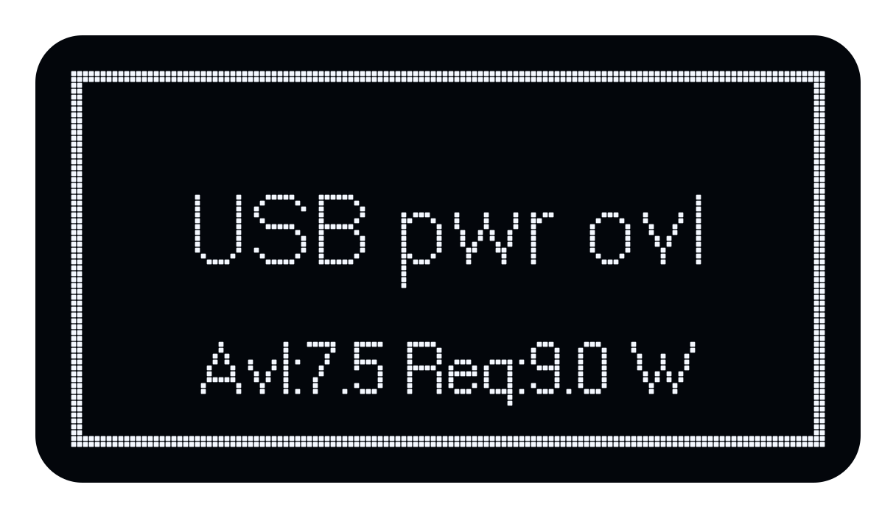

Signal Setup
For step-by-step instructions on selecting and playing a signal, see Quick Start.
On this page
Available signal sources
| Signal | Description |
|---|---|
| Pink MLS | An unobtrusive pseudo-random noise signal used to measure impulse responses indoors. |
| ESweep | A general-purpose stimulus for impulse response measurements. |
| STIPA | A modulated noise signal for speech intelligibility measurements. |
| Speech | A male voice used to set the output level of a PA system. |
| Sine | A generated sine wave. Set its frequency in hertz and its gain; this is not a calibrated acoustic level. |
| User | A signal uploaded by the user to internal storage. |
| BNC input | External analogue line input. Set the external source level to avoid input clipping. |
Playback modes
Pink MLS, ESweep and STIPA support two playback modes.
| Mode | Description |
|---|---|
| Continuous | Signal repeats continuously (default) |
| Intermittent | Signal alternates between playback and silence. Used to measure the background noise together with the speech intelligibility. |
Sequence duration
The stimulus length is the duration of the signal within one sequence. The measurement length is one complete period. In Intermittent mode, a period contains the stimulus followed by an equally long silence, so the measurement length is twice the stimulus length.
Times below are rounded, except for the continuous STIPA period of exactly 100 s. Measurement lengths exclude soundfield buildup and any additional recording time required by the measurement software.
| Signal | Mode | Stimulus length | Measurement length (one period) |
|---|---|---|---|
| Pink MLS / ESweep | Continuous | 2.7 s | 2.7 s |
| Pink MLS / ESweep | Continuous | 5.5 s | 5.5 s |
| Pink MLS / ESweep | Continuous | 11 s | 11 s |
| Pink MLS / ESweep | Continuous | 22 s | 22 s |
| Pink MLS / ESweep | Intermittent | 5.5 s | 11 s |
| Pink MLS / ESweep | Intermittent | 11 s | 22 s |
| Pink MLS / ESweep | Intermittent | 22 s | 44 s |
| STIPA | Continuous | 100 s | 100 s |
| STIPA | Intermittent | 11 s | 22 s |
| STIPA | Intermittent | 22 s | 44 s |
Soundfield buildup: For impulse response (IR) measurements, DIRAC Field will play the stimulus before recording to allow the soundfield to build up. DIRAC Field manages this additional time; it is not part of the Echo sequence period or the measurement lengths shown above.
Continuous STIPA repeats after exactly 100 s. This repeat period does not prescribe the duration of a STIPA measurement; set the measurement duration in the measurement software. Speech, Sine, User and BNC input do not use this sequence-length setting.
The front-panel Signal Length choices refer to one complete sequence period. For an intermittent sequence this includes the silent half; use the stimulus and measurement columns above to distinguish them.
Signal level
The level setting depends on the signal type. For Pink MLS, ESweep, STIPA and Speech, it specifies an A-weighted sound level in dBA. For other signals, it specifies a gain in dB.
| Signal | Level setting | Description |
|---|---|---|
| Pink MLS | 60 or 70 dBA; custom 40–80 dBA | Calibrated at 60 and 70 dBA. Other levels are derived from these calibrated settings. |
| ESweep | 60 or 70 dBA; custom 40–80 dBA | Calibrated at 60 and 70 dBA. Other levels are derived from these calibrated settings. |
| STIPA | 60 or 70 dBA; custom 40–80 dBA | Calibrated at 60 and 70 dBA. Other levels are derived from these calibrated settings. |
| Speech | 60 dBA; custom 40–70 dBA | Calibrated at 60 dBA. Other levels are derived from this calibrated setting. |
| Sine | −60 to 0 dB | Gain applied to the generated tone. |
| User | −60 to 0 dB | Gain applied to the uploaded signal. |
| BNC input | −60 to +20 dB | Gain applied to the external input signal. |
The ranges above describe the local front-panel controls. In the front-panel STIPA Signal Level menu, User opens custom level adjustment; it does not select an uploaded User signal. DIRAC Field offers STIPA preset levels of 60 and 70 dBA.

A gain setting does not specify an absolute sound level. The resulting output level depends on the level of the source signal.
Power limits and warnings
The usable signal level depends on the signal peaks, the remaining battery energy and the power available from the USB supply. Lowering the signal level reduces the load, but input clipping must be corrected at the external source.
For stored signals, Echo checks the expected power demand before starting playback and when changing the signal level. If the requested level exceeds the available power, a warning is displayed and playback may be prevented. The level of an external BNC signal is not known in advance, so its source level must also be controlled.
In a full-screen power warning, Avl identifies the available amount and Req the required amount. Press any button to return to the home screen, correct the cause and try again.
The following illustrations reproduce the display layout with example readings; the numbers are not fixed limits.
ADC overload (ADCO)
The external BNC input reaches the analogue-to-digital converter's full-scale limit and clips. The input clip indicator appears near the lower left of the home screen. Reduce the level of the external source; lowering Echo's output gain does not remove distortion that has already occurred at the input.

DAC overload (DACO)
The signal peaks exceed the output stage's limit. In Echo, this can occur before the digital signal reaches full scale. The output clip indicator appears near the lower right of the home screen. Reduce the selected signal level or gain; for an external signal, reducing its source level also helps.

Battery remaining energy overload (BREO)
With no USB supply attached, the remaining battery energy is insufficient to run the chosen signal for the minimum operating time. Echo displays Battery low. Lower the signal level, recharge the battery or connect a suitable USB supply.

Battery peak current overload (BPCO)
With no USB supply attached, the signal peaks would draw more current than the battery protection allows. Echo displays Battery ovl. This can occur even when the battery has plenty of charge. Reduce the signal level or use a suitable USB supply.

USB average power overload (UAPO)
The average power required by Echo and the selected signal exceeds the power available from the connected USB supply. Echo displays USB pwr ovl. Reduce the signal level or use a USB supply and cable capable of delivering more power. The available power depends on the connection negotiated with the supply.
USB peak current overload (UPCO)
The signal peaks demand more current than the USB supply can sustain, even if its average power rating appears sufficient. The height and duration of the peaks matter. User signals with a high crest factor (large peaks relative to their average level) are particularly demanding. Reduce the gain or use a signal with smaller peaks.
Both USB overload conditions use the USB pwr ovl message:
